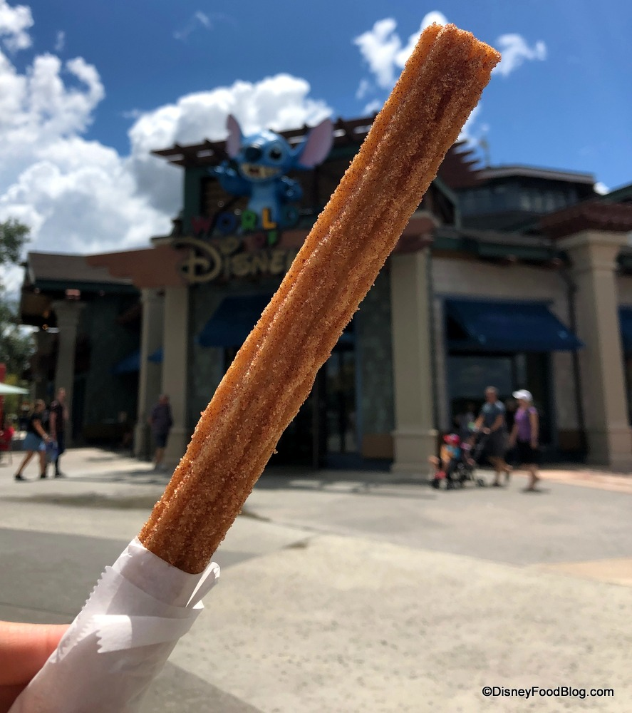
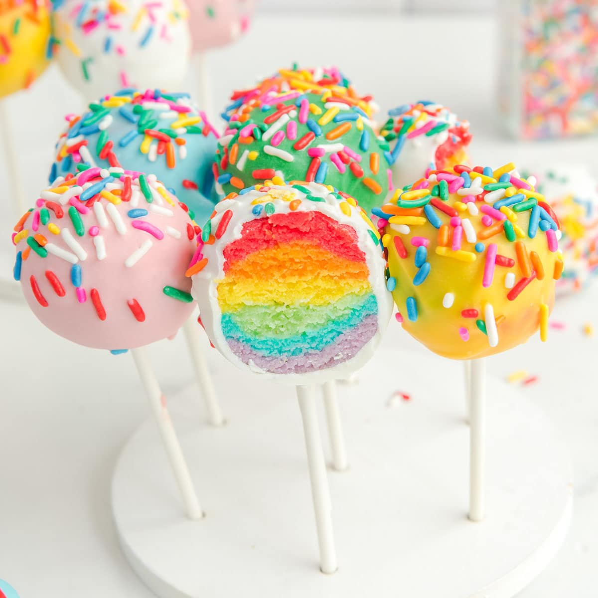

My Favorite Foods
Churro

Shop here
A churro is a type of fried dough from Spanish and Portuguese cuisine, made with choux pastry dough piped into hot oil with a piping bag and large closed star tip or similar shape.
Ice cream

Ice cream is a frozen dessert typically made from milk or cream that has been flavoured with a sweetener, either sugar or an alternative, and a spice, such as cocoa or vanilla, or with fruit, such as strawberries or peaches. Food colouring is sometimes added in addition to stabilizers.
Shop here
Cake Pop

Shop here
A cake pop is a form of cake styled as a lollipop. Cake crumbs are mixed with icing or chocolate, and formed into small spheres or cubes in the same way as cake balls, before being given a coating of icing, chocolate or other decorations and attached to lollipop sticks.
Website made by Sugeeta